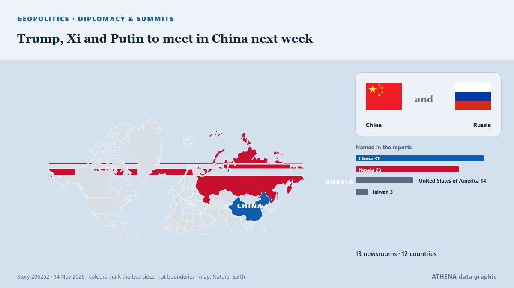

Diplomatie et sommets
SponsoriséPrésenté par  Cybernetics and Artificial Intelligence Lab Welcome to the Cybernetics and Artificial Intelligence Laboratory, established at the Department of Business Administration of the National and Kapodistrian University of Athens. The lab is headed by Professor Dimitrios Thomakos. The lab aims to do research that can be published in top venues. Our research uses tools and methods of Artificial Intelligence, and lies in the following areas: - Forecasting - Decision making - Cyber security - Finance We are always looking forward to collaborating with exceptional students!
Cybernetics and Artificial Intelligence Lab Welcome to the Cybernetics and Artificial Intelligence Laboratory, established at the Department of Business Administration of the National and Kapodistrian University of Athens. The lab is headed by Professor Dimitrios Thomakos. The lab aims to do research that can be published in top venues. Our research uses tools and methods of Artificial Intelligence, and lies in the following areas: - Forecasting - Decision making - Cyber security - Finance We are always looking forward to collaborating with exceptional students!
| 1 nov. | 0 |
|---|---|
| 2 nov. | 0 |
| 3 nov. | 0 |
| 4 nov. | 0 |
| 5 nov. | 0 |
| 6 nov. | 2 |
| 7 nov. | 0 |
| 8 nov. | 1 |
| 9 nov. | 0 |
| 10 nov. | 8 |
| 11 nov. | 4 |
| 12 nov. | 8 |
| 13 nov. | 1 |
| 14 nov. | 0 |
Les titres sont affichés en anglais, tels que publiés.

Trump, Xi and Putin to meet in China next week
Donald Trump, Vladimir Putin and Xi Jinping will hold the first ever three-way meeting between the leaders of the United States, Russia and China at a summit in Shenzhen in China next week, the White… de RTÉ News
Netanyahu, Eisenkot to meet for security briefing
Israeli Prime Minister Benjamin Netanyahu and Yashar party leader Gadi Eisenkot will hold a "political-security briefing meeting" in Jerusalem later today, the two politicians said in a joint… de AzerNews
Germany's Merz asks Trump for 'no surprises' from Putin talks
German Chancellor Friedrich Merz is pushing for EU leaders to commit to supporting Ukraine as part of negotiations on the bloc's long-term budget. de CNA (Channel NewsAsia)
Putin suggests no Ukraine compromise in meeting with US envoys
The Russian president says he will not water down his territorial demands to control parts of Ukraine that Russia claims to have annexed. de Free Malaysia Today
US envoys Witkoff and Kushner arrive at Kremlin
Kirill Dmitriev added that peacemakers "will prevail" de TASS (English)
Global powers head to Asia with trade, AI, security in focus
The global spotlight turns to Asia as world leaders gather for back-to-back summits — Asean in Manila from Nov 16-18 and Apec in Shenzhen from Nov 18-19. de Free Malaysia Today
Russian ambassador to US Alexander Darchiev dies suddenly at 66
The announcement called Darchiev ‘an outstanding diplomat, an experienced leader, a kind friend, and a mentor’ de The Independent
President Ilham Aliyev attended opening plenary session of the 9th European Political Community Summit - UPDATED
The war in Ukraine will be among issues discussed as Ireland hosts the ninth meeting of the European Political Community. de Evening Standard (London)
Trump says US does not need Iran deal, directs Vance to focus on domestic corruption
By Bo Erickson WASHINGTON, Nov 12 (Reuters) - President Donald Trump saidon Thursdaythe US does not need a deal with Iran and directedVice President JD Vance, who has played a role in efforts to… de Al-Monitor
Ukraine and Russia agree to large-scale prisoner exchange after second day of talks
Thousands of Ukrainians are held in Russian captivity. de The Independent
Iran, Turkey presidents confer on trade, regional stability, bilateral relations
Iranian President Masoud Pezeshkian and Turkish President Recep Tayyip Erdogan met on the sidelines of the 31st UN climate change conference (COP31) in Antalya, Turkey and discussed ways to develop… de NEWS.am (English)
Russia-US-Ukraine trilateral talks resume for second day in Abu Dhabi
Rustem Umierov said Ukraine's team is en route to Abu Dhabi for trilateral talks on 10-11 November, with European and NATO representatives also attending. de Ukrainska Pravda (English)
US asks Iraq to shut most Iran border crossings, Iraqi foreign minister says
Nov 8 - The US Treasury has asked Iraq to close all border crossings with Iran except for two as part of Washington's policy of increasing economic pressure on Tehran, Iraqi Foreign Minister Fuad… de The Straits Times
White House Confronts Democrats over Planned Probes, Claiming Possible ‘Criminality’
Rep. Robert Garcia, the likely head of the House Oversight Committee, stressed that Congress’ investigative powers do not need the “permission of the White House.” de Courthouse News
Ukraine’s Zelensky Welcomes ‘Changes’ in US Approach During Talks with Russia
Ukraine and Russia are negotiating a significant prisoner swap involving US participation, as announced by Ukrainian President Volodymyr Zelensky. de Arab News
Kennedy Family Sues To Block Trump’s 250-Foot Arch—Says It Would Cast Shadow On JFK’s Grave
Nine members of the Kennedy family are seeking to join a lawsuit to block the construction of President Donald Trump’s planned triumphal arch in Washington, D.C. de Forbes Business
Russian negotiator rejects territorial swaps with Ukraine as Abu Dhabi talks end
Vladimir Medinsky — presidential aide and longtime chairman of the Russian Military Historical Society (RVIO) — once again led the Russian delegation at trilateral talks in Abu Dhabi. de Meduza (English)
Rubio hails 'very productive' Russia-Ukraine talks in Abu Dhabi
Rubio says Russia-Ukraine Abu Dhabi talks 'very productive' de Khaleej Times (working feed)
Russia and Ukraine discuss prisoners, security guarantees, and postwar future on first day of Abu Dhabi talks
Participants will focus on developing mechanisms to prevent threats and strengthening regional stability. de TASS (English)